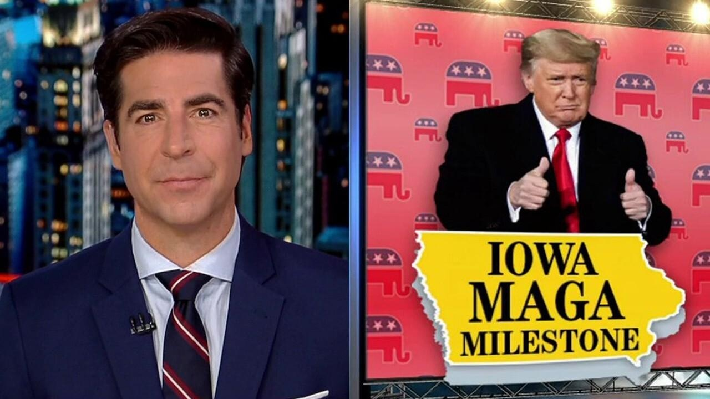

JESSE WATTERS: The results in Iowa show the will of the people is crystal clearFox News host Jesse Watters shares the significance of former President Trump's win in Iowa on "Jesse Watters Primetime." JESSE WATTERS: A win for voters, a loss for lawyers. That's the headline from Iowa. Democracy isn't decided in the courtroom. It's decided by you, the voter. For the first time in years, the will of the people was crystal clear. Americans delivered a message without interference from partisan judges and prosecutors. We wrestled democracy away from the courts and put it back in the hands of "We the People." In a historic shellacking, Donald Trump went home the unequivocal winner, 98 out of 99 counties, beating DeSantis and Haley combined. A 30-point blowout and cracking 50%, doubling his 2016 performance, turning out new voters and making major inroads with evangelicals and college grads. … The Republican Party's nominating Donald Trump and these are the reasons why. The top issue at stake in Iowa? Illegal immigration and the economy. Both issues the border hawk businessman dominates-- against Republicans and against Biden. Biden's delivered a hot, heaping plate of chaos. One-third of Republican voters want a complete and total upheaval in Washington. You want Donald Trump to return to Washington and finish the job. The job you believe he was unfairly prevented from finishing. … Last election, the spooks lied about the lab leak, the laptop and the letter. This changed votes. Plus a harvesting epidemic with the "Wandas" of the world. And this year? It'll be lawyers interfering. But so far, the indictments have backfired on the Democrats because they never understood you, the voter. They actually don't want to understand you. They want to hate you from a warm Manhattan studio for threatening their power. … Iowa hit a nerve with the press because this morning they woke up knowing Biden is not capable of debating Trump. And the media is calling him the Grand Wizard, attacking you and moving the goalposts. Mass censorship's next. Last night, CNN dumped out of Trump's victory speech when he mentioned the border. |
 |